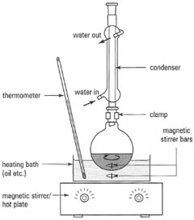

Alkanes
X

- CnH2n+2
- Non-polar
| Chain length | Name | Melting point | Boiling point |
|---|---|---|---|
| 1 | Methane | -183 | -162 |
| 2 | Ethane | -183 | -89 |
| 3 | Propane | -188 | -42 |
| 4 | Butane | -138 | -0.5 |
| 5 | Pentane | -130 | 36 |
| 6 | Hexane | -95 | 69 |
| 7 | Heptane | -91 | 98 |
| 8 | Octane | -57 | 126 |
| Chain length | Name | Melting point | Boiling point |
|---|---|---|---|
| 1 | Methane | -183 | -162 |
| 2 | Ethane | -183 | -89 |
| 3 | Propane | -188 | -42 |
| 4 | Butane | -138 | -0.5 |
| 5 | Pentane | -130 | 36 |
| 6 | Hexane | -95 | 69 |
| 7 | Heptane | -91 | 98 |
| 8 | Octane | -57 | 126 |


Requires:
Alkane (gas) is exposed to diatomic Halogen (X2) and treated with UV light.
requires
Requires:
When an alkene is exposed to a Hydrogen-Halogen or a diatomic Halogen molecule it reacts to form a Haloalkane.
Requires:
With the presense of a concentrated strong acid (e.g. H2SO4) a mixture of a liquid alkene and water will produce an alcohol. Pentene is the first alkene to have be liquid at room-temperature (boils at 30°C), so this method will not work with smaller alkenes. The reaction is exothermic, so to make it happen cool the mixture.

The mixture of alcohol and alkene can be distilled, as alcohols have a much lower boiling point.
When an alkyne is exposed to diatomic halogens it forms a haloalkane.
Lindlar's catalyst is palladium that is mixed with a little bit of lead and quinoline, which reduces its effectiveness so it can only reduce to alkenes.
In the presence of a strong base (OH-) and heat a haloalkane will react to form an alcohol.The haloalkane has a lower boiling point than the alcohol, so a reflux setup will be used.
When treated with with a Hydrogen-Halogen molecule an alcohol will form a haloalkane. This is too slow for Chloroalkanes, so a different method is used for them.
Requires
:Ammonia is basic, and so would usually pick up a proton to form ammonium rather than react with an alcohol, however in the temperature range 150°C - 220°C they do react.

When an alcohol is heated in the presence of a strong acid it will react to form an alkane. This can be extracted using a distillation setup.

Secondary alcohols can be oxidised to ketones in the presence of a strong acid (e.g. H2SO4) using a catalyst such as Dichromate. A distilling setup is used for this reaction.
Requires:
An alcohol and a carboxylic acid heated under reflux in the presence of a strong concentrated acid will form an ester. A reflux condenser is needed to ensure reactants stay in system.
Requires
When an alcohol in the presence of a catalyst is heated under reflux the reaction will continue until the alcohol is turned into a carboxylic acid.
Requires:
Distillation removes the aldehyde from the reaction so it does not continue through to Carboxylic acid.
The fermentation of sugars is a biological process. Bacteria or fungi such as yeast break down glucose into ethanol. Enzymes such as Maltase can catalyse the reaction to break down other sugars into glucose.
Requires:
When an aldehyde is heated under reflux in the precense of a catalyst it will react to form a carboxylic acid.
Requires:
When a carboxylic acid and a base neutralise each other, a carboxylate ion is a product.
Requires:
To do this reaction without DCC lots of heat (>100°C) is required to prevent the amine from neutralising the carboxylic acid and making an unreactive carboxylate ion.